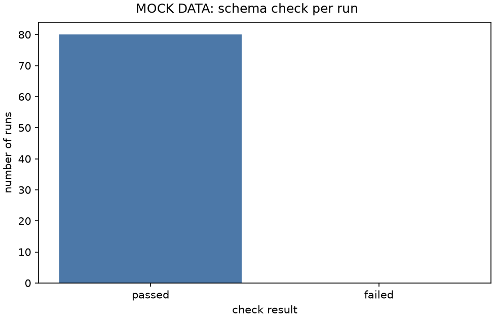

Stage report, step 2 of 3. Back to summary
| What | Check every mock run against the schema in tools/schema.py. |
|---|---|
| Why | A renamed column or a missing file must stop the flow here. Milestone M1 needs the check to pass on the mock runs. |
| Input data | 80 run folders under mock/runs/ (generated, fake). |
| Output data | results/mock/check_log.txt, 1 lines. |
| Result (numbers) | runs 80, failed 0, problems 0. |
| Result (good or bad) | Good: every run passes the check. |
| Status | ran |
Figure and table

| run | file | column | message |
|---|---|---|---|
| none | no problem found |